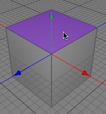
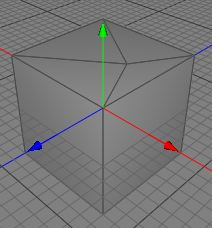
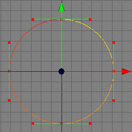
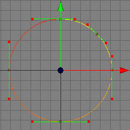

Insert Point Tool
The insert point tool can be used to insert a point into an already existing polygon, edge or spline curve. It can also be used to add new points to raw polygon objects. This points can then be used to build up a new mesh with the create polygon tool.
Modes
The insert point tool performs different operations depending on which element is currently highlighted.


When the mouse cursor is over a polygon, you can insert a point into an already existing polygon. The polygon will then be split into triangles. The point will be inserted at the position where the mouse cursor was clicked.
 
When the mouse cursor is over an edge, you can insert a point into the edge of a polygon. You can only see the new point when you are in point mode
If you click into the empty space a new point will be created on the coordinate axis plain which is most straight forward to your active camera. You have to be in point mode to see the newly created point.
To add a point into a spline object you have to be in point mode. To insert a point into a path just click on the path. Cheetah3D then inserts a point into the spline without changing the shape of the curve.
 
Keys
- none
Properties
- none